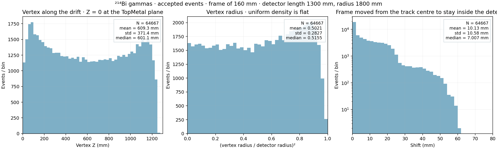
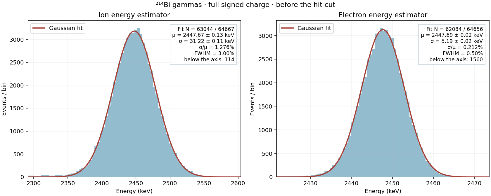
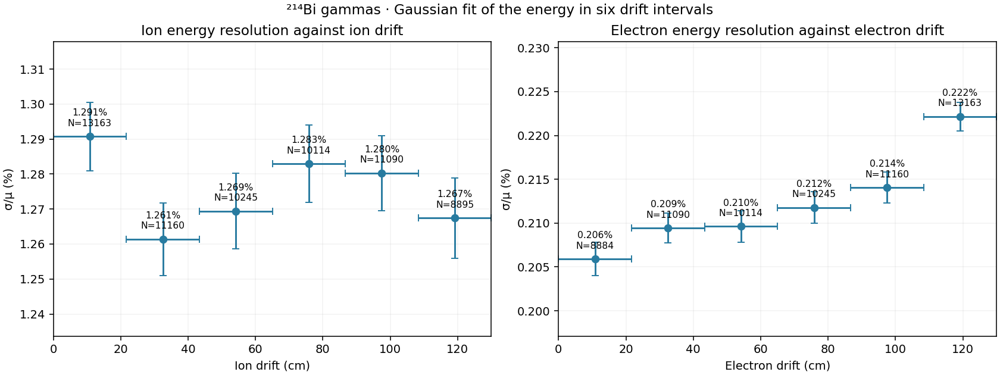
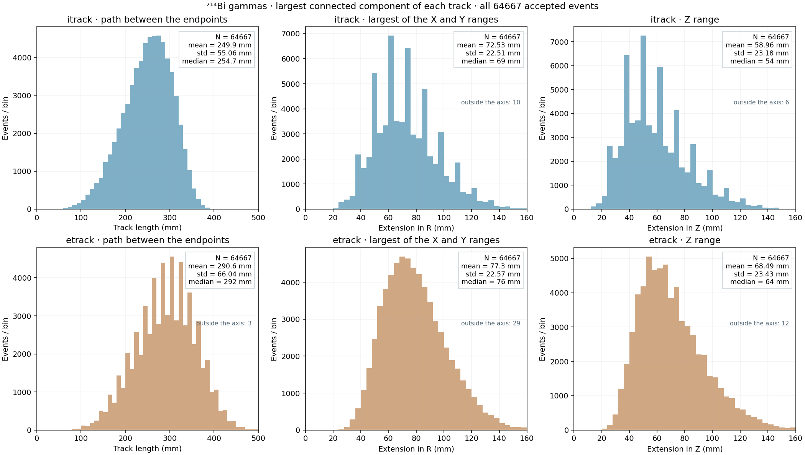
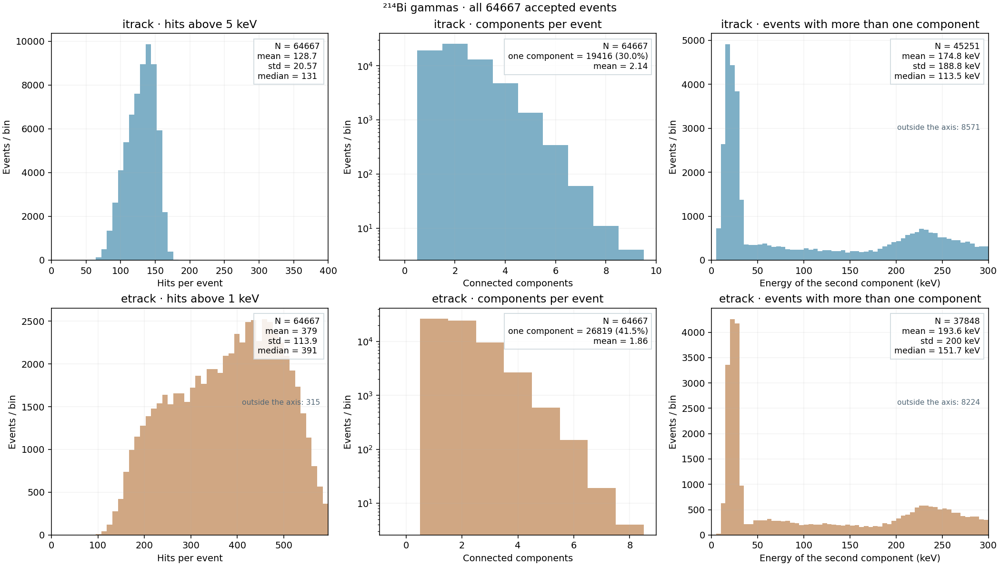
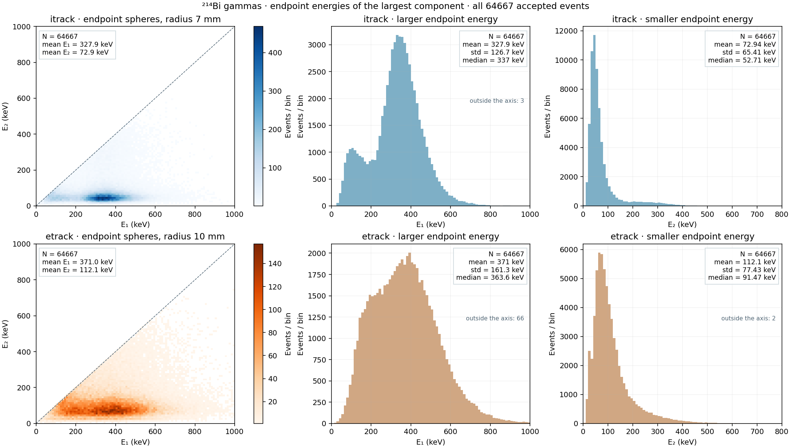
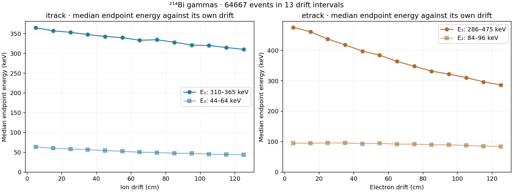

Run bi214_itaca_20M_ion15: 200 batches, 64667 accepted events. Frame of 160 mm; itrack hits above 5 keV, voxels of 3 mm, connection radius 8 mm; etrack hits above 1 keV, voxels of 4 mm, connection radius 8 mm. Saved hit cuts: 3 keV (ions), 1 keV (electrons).
Events remaining after each step, applied in this order. The first steps use the Monte Carlo truth and are common to both tracks. The ROI is one FWHM of the bb0nu electron-energy peak around Qbb, and the E₂ threshold keeps 80% of the bb0nu events that reach that step (comparison of the two samples).
| Step | Events | Of previous step | Of first step |
|---|---|---|---|
| Generated | 20000000 | 100.00% | |
| Energy deposited in the gas inside the Geant4 window | 546096 | 2.7% | 2.73% |
| Fiducial: track inside the detector, 50 mm from the EL, not larger than the frame; frame inside the detector | 513448 | 94.0% | 2.57% |
| Gamma veto: no gamma deposit above the cut outside the frame | 64667 | 12.6% | 0.32% |
| ROI cut: electron energy within 2452.0–2463.6 keV | 12518 | 19.4% | 0.06% |
| Track selection (itrack): no detached deposit; one segment, or up to three joined | 3236 | 25.9% | 0.02% |
| E₂ > 135 keV (itrack) | 370 | 11.4% | 0.00% |
| Step | Events | Of previous step | Of first step |
|---|---|---|---|
| Generated | 20000000 | 100.00% | |
| Energy deposited in the gas inside the Geant4 window | 546096 | 2.7% | 2.73% |
| Fiducial: track inside the detector, 50 mm from the EL, not larger than the frame; frame inside the detector | 513448 | 94.0% | 2.57% |
| Gamma veto: no gamma deposit above the cut outside the frame | 64667 | 12.6% | 0.32% |
| ROI cut: electron energy within 2452.0–2463.6 keV | 12518 | 19.4% | 0.06% |
| One component in the etrack | 5223 | 41.7% | 0.03% |
| E₂ > 157 keV (etrack) | 989 | 18.9% | 0.00% |
| Step | Events | Fraction of events read |
|---|---|---|
| Events read (after the Geant4 energy window) | 546096 | 100.0% |
| Rejected: energy deposit outside the detector | 1 | 0.0% |
| Rejected: main track within 50 mm of the EL | 23181 | 4.2% |
| Rejected: track larger than the frame | 42 | 0.0% |
| Rejected: frame not inside the detector | 9424 | 1.7% |
| Rejected: gamma deposit above the cut outside the frame | 448781 | 82.2% |
| Accepted | 64667 | 11.8% |
| Batch | Events read | Accepted | Fraction |
|---|---|---|---|
| b00000 | 2725 | 312 | 11.4% |
| b00001 | 2802 | 338 | 12.1% |
| b00002 | 2676 | 306 | 11.4% |
| b00003 | 2847 | 333 | 11.7% |
| b00004 | 2758 | 327 | 11.9% |
| b00005 | 2729 | 330 | 12.1% |
| b00006 | 2739 | 341 | 12.4% |
| b00007 | 2688 | 335 | 12.5% |
| b00008 | 2738 | 354 | 12.9% |
| b00009 | 2761 | 346 | 12.5% |
| b00010 | 2741 | 332 | 12.1% |
| b00011 | 2717 | 316 | 11.6% |
| b00012 | 2771 | 326 | 11.8% |
| b00013 | 2701 | 333 | 12.3% |
| b00014 | 2835 | 331 | 11.7% |
| b00015 | 2717 | 327 | 12.0% |
| b00016 | 2821 | 342 | 12.1% |
| b00017 | 2747 | 321 | 11.7% |
| b00018 | 2740 | 394 | 14.4% |
| b00019 | 2703 | 313 | 11.6% |
| b00020 | 2742 | 311 | 11.3% |
| b00021 | 2755 | 310 | 11.3% |
| b00022 | 2787 | 349 | 12.5% |
| b00023 | 2769 | 323 | 11.7% |
| b00024 | 2831 | 335 | 11.8% |
| b00025 | 2812 | 333 | 11.8% |
| b00026 | 2707 | 307 | 11.3% |
| b00027 | 2776 | 291 | 10.5% |
| b00028 | 2623 | 301 | 11.5% |
| b00029 | 2768 | 336 | 12.1% |
| b00030 | 2740 | 309 | 11.3% |
| b00031 | 2675 | 292 | 10.9% |
| b00032 | 2719 | 332 | 12.2% |
| b00033 | 2678 | 313 | 11.7% |
| b00034 | 2689 | 314 | 11.7% |
| b00035 | 2683 | 303 | 11.3% |
| b00036 | 2760 | 317 | 11.5% |
| b00037 | 2653 | 276 | 10.4% |
| b00038 | 2751 | 342 | 12.4% |
| b00039 | 2675 | 304 | 11.4% |
| b00040 | 2735 | 326 | 11.9% |
| b00041 | 2719 | 323 | 11.9% |
| b00042 | 2755 | 353 | 12.8% |
| b00043 | 2678 | 325 | 12.1% |
| b00044 | 2666 | 327 | 12.3% |
| b00045 | 2763 | 331 | 12.0% |
| b00046 | 2669 | 313 | 11.7% |
| b00047 | 2699 | 309 | 11.4% |
| b00048 | 2778 | 302 | 10.9% |
| b00049 | 2638 | 320 | 12.1% |
| b00050 | 2741 | 328 | 12.0% |
| b00051 | 2691 | 343 | 12.7% |
| b00052 | 2700 | 342 | 12.7% |
| b00053 | 2746 | 311 | 11.3% |
| b00054 | 2691 | 318 | 11.8% |
| b00055 | 2751 | 337 | 12.3% |
| b00056 | 2741 | 343 | 12.5% |
| b00057 | 2717 | 329 | 12.1% |
| b00058 | 2670 | 314 | 11.8% |
| b00059 | 2630 | 305 | 11.6% |
| b00060 | 2687 | 317 | 11.8% |
| b00061 | 2735 | 318 | 11.6% |
| b00062 | 2765 | 324 | 11.7% |
| b00063 | 2682 | 337 | 12.6% |
| b00064 | 2740 | 313 | 11.4% |
| b00065 | 2714 | 295 | 10.9% |
| b00066 | 2766 | 320 | 11.6% |
| b00067 | 2844 | 331 | 11.6% |
| b00068 | 2728 | 342 | 12.5% |
| b00069 | 2673 | 294 | 11.0% |
| b00070 | 2757 | 333 | 12.1% |
| b00071 | 2645 | 324 | 12.2% |
| b00072 | 2685 | 311 | 11.6% |
| b00073 | 2779 | 321 | 11.6% |
| b00074 | 2713 | 286 | 10.5% |
| b00075 | 2738 | 348 | 12.7% |
| b00076 | 2799 | 359 | 12.8% |
| b00077 | 2752 | 314 | 11.4% |
| b00078 | 2772 | 323 | 11.7% |
| b00079 | 2593 | 295 | 11.4% |
| b00080 | 2760 | 321 | 11.6% |
| b00081 | 2737 | 339 | 12.4% |
| b00082 | 2794 | 335 | 12.0% |
| b00083 | 2749 | 339 | 12.3% |
| b00084 | 2774 | 324 | 11.7% |
| b00085 | 2714 | 367 | 13.5% |
| b00086 | 2795 | 326 | 11.7% |
| b00087 | 2673 | 307 | 11.5% |
| b00088 | 2672 | 307 | 11.5% |
| b00089 | 2621 | 314 | 12.0% |
| b00090 | 2671 | 297 | 11.1% |
| b00091 | 2799 | 359 | 12.8% |
| b00092 | 2744 | 328 | 12.0% |
| b00093 | 2794 | 341 | 12.2% |
| b00094 | 2665 | 341 | 12.8% |
| b00095 | 2785 | 352 | 12.6% |
| b00096 | 2776 | 327 | 11.8% |
| b00097 | 2631 | 307 | 11.7% |
| b00098 | 2636 | 311 | 11.8% |
| b00099 | 2756 | 310 | 11.2% |
| b00100 | 2761 | 321 | 11.6% |
| b00101 | 2622 | 301 | 11.5% |
| b00102 | 2758 | 327 | 11.9% |
| b00103 | 2776 | 339 | 12.2% |
| b00104 | 2806 | 326 | 11.6% |
| b00105 | 2718 | 323 | 11.9% |
| b00106 | 2745 | 326 | 11.9% |
| b00107 | 2774 | 347 | 12.5% |
| b00108 | 2614 | 301 | 11.5% |
| b00109 | 2749 | 342 | 12.4% |
| b00110 | 2702 | 323 | 12.0% |
| b00111 | 2796 | 355 | 12.7% |
| b00112 | 2742 | 316 | 11.5% |
| b00113 | 2666 | 330 | 12.4% |
| b00114 | 2738 | 330 | 12.1% |
| b00115 | 2735 | 342 | 12.5% |
| b00116 | 2758 | 346 | 12.5% |
| b00117 | 2650 | 315 | 11.9% |
| b00118 | 2732 | 287 | 10.5% |
| b00119 | 2787 | 330 | 11.8% |
| b00120 | 2709 | 348 | 12.8% |
| b00121 | 2690 | 341 | 12.7% |
| b00122 | 2712 | 322 | 11.9% |
| b00123 | 2651 | 324 | 12.2% |
| b00124 | 2722 | 310 | 11.4% |
| b00125 | 2803 | 330 | 11.8% |
| b00126 | 2747 | 288 | 10.5% |
| b00127 | 2713 | 294 | 10.8% |
| b00128 | 2805 | 356 | 12.7% |
| b00129 | 2752 | 347 | 12.6% |
| b00130 | 2728 | 328 | 12.0% |
| b00131 | 2777 | 335 | 12.1% |
| b00132 | 2670 | 330 | 12.4% |
| b00133 | 2752 | 317 | 11.5% |
| b00134 | 2729 | 291 | 10.7% |
| b00135 | 2699 | 327 | 12.1% |
| b00136 | 2672 | 320 | 12.0% |
| b00137 | 2734 | 309 | 11.3% |
| b00138 | 2755 | 314 | 11.4% |
| b00139 | 2738 | 333 | 12.2% |
| b00140 | 2695 | 294 | 10.9% |
| b00141 | 2756 | 322 | 11.7% |
| b00142 | 2761 | 348 | 12.6% |
| b00143 | 2752 | 311 | 11.3% |
| b00144 | 2862 | 349 | 12.2% |
| b00145 | 2705 | 317 | 11.7% |
| b00146 | 2693 | 312 | 11.6% |
| b00147 | 2741 | 317 | 11.6% |
| b00148 | 2752 | 305 | 11.1% |
| b00149 | 2796 | 310 | 11.1% |
| b00150 | 2630 | 323 | 12.3% |
| b00151 | 2700 | 322 | 11.9% |
| b00152 | 2604 | 278 | 10.7% |
| b00153 | 2786 | 323 | 11.6% |
| b00154 | 2778 | 313 | 11.3% |
| b00155 | 2799 | 313 | 11.2% |
| b00156 | 2696 | 309 | 11.5% |
| b00157 | 2793 | 328 | 11.7% |
| b00158 | 2716 | 335 | 12.3% |
| b00159 | 2662 | 306 | 11.5% |
| b00160 | 2694 | 322 | 12.0% |
| b00161 | 2754 | 329 | 11.9% |
| b00162 | 2708 | 314 | 11.6% |
| b00163 | 2741 | 325 | 11.9% |
| b00164 | 2738 | 318 | 11.6% |
| b00165 | 2701 | 334 | 12.4% |
| b00166 | 2635 | 310 | 11.8% |
| b00167 | 2681 | 303 | 11.3% |
| b00168 | 2652 | 309 | 11.7% |
| b00169 | 2737 | 338 | 12.3% |
| b00170 | 2740 | 376 | 13.7% |
| b00171 | 2763 | 335 | 12.1% |
| b00172 | 2775 | 331 | 11.9% |
| b00173 | 2809 | 351 | 12.5% |
| b00174 | 2693 | 314 | 11.7% |
| b00175 | 2668 | 298 | 11.2% |
| b00176 | 2797 | 352 | 12.6% |
| b00177 | 2713 | 322 | 11.9% |
| b00178 | 2750 | 307 | 11.2% |
| b00179 | 2789 | 313 | 11.2% |
| b00180 | 2685 | 285 | 10.6% |
| b00181 | 2666 | 328 | 12.3% |
| b00182 | 2708 | 317 | 11.7% |
| b00183 | 2705 | 313 | 11.6% |
| b00184 | 2705 | 330 | 12.2% |
| b00185 | 2706 | 332 | 12.3% |
| b00186 | 2823 | 325 | 11.5% |
| b00187 | 2744 | 306 | 11.2% |
| b00188 | 2754 | 323 | 11.7% |
| b00189 | 2756 | 313 | 11.4% |
| b00190 | 2714 | 337 | 12.4% |
| b00191 | 2798 | 322 | 11.5% |
| b00192 | 2738 | 314 | 11.5% |
| b00193 | 2819 | 332 | 11.8% |
| b00194 | 2808 | 365 | 13.0% |
| b00195 | 2725 | 333 | 12.2% |
| b00196 | 2773 | 318 | 11.5% |
| b00197 | 2835 | 318 | 11.2% |
| b00198 | 2694 | 312 | 11.6% |
| b00199 | 2698 | 306 | 11.3% |

Sum of all signed reconstructed charges. Ions: μ = 2447.7 keV, σ/μ = 1.28% (3.00% FWHM). Electrons: μ = 2447.7 keV, σ/μ = 0.212% (0.50% FWHM). Incomplete electron estimates: 11; incomplete ion estimates: 0.


The main track is the connected component with most voxels. Length: sum of the distances between consecutive voxels of the tree path joining its two endpoints. Extension in R: the larger of its X and Y ranges; extension in Z: its Z range; each range includes one voxel width.
| Track | Length, median (mm) | Extension in R, median (mm) | Extension in Z, median (mm) | Hits, median | One component | Mean E₁ (keV) | Mean E₂ (keV) |
|---|---|---|---|---|---|---|---|
| itrack | 255 | 69 | 54 | 131 | 30.0% | 328 | 73 |
| etrack | 292 | 76 | 64 | 391 | 41.5% | 371 | 112 |


E₁ and E₂ sum the voxel energies in spheres around the two endpoints of the main track, with E₁ ≥ E₂.


Numerical results: events.h5 (one row per accepted event).